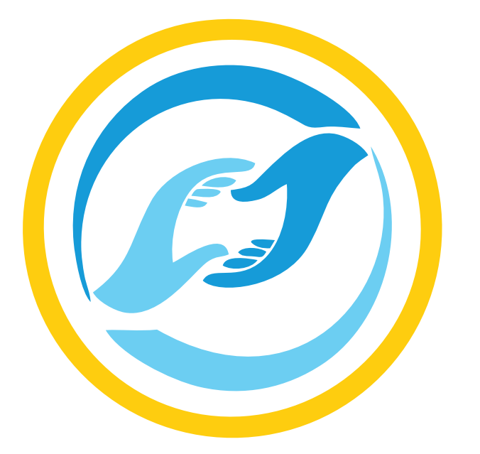
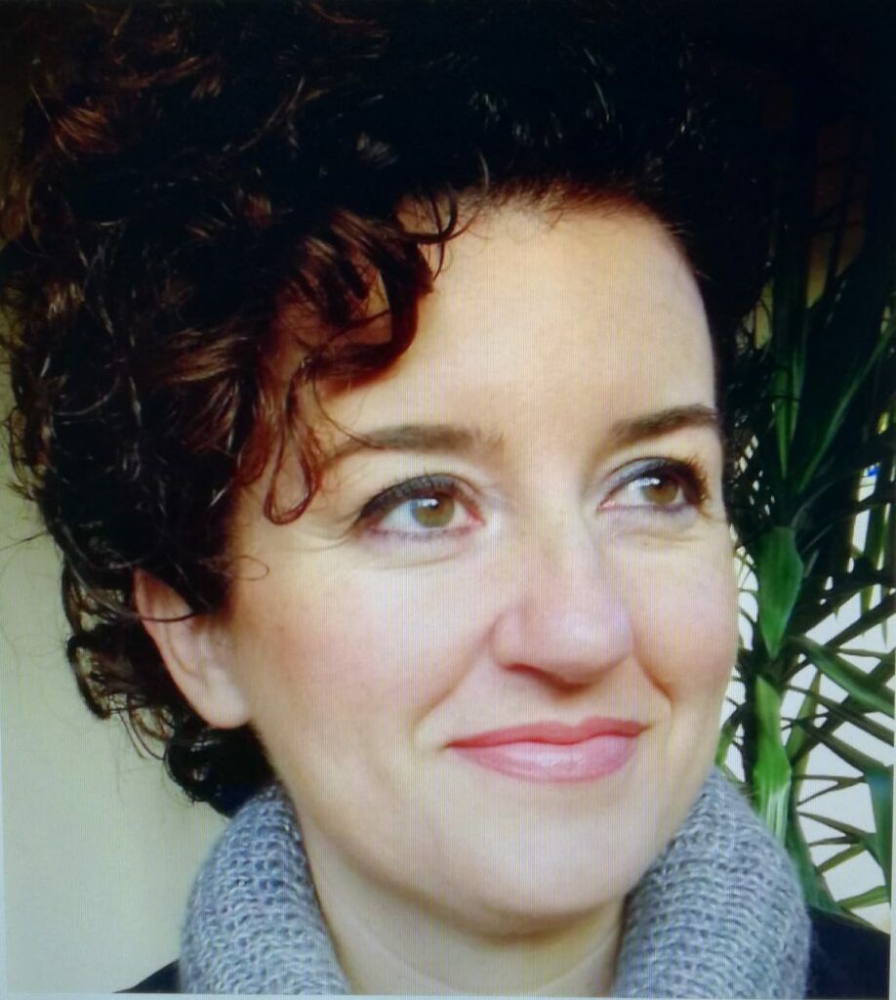
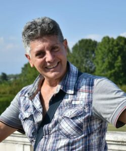
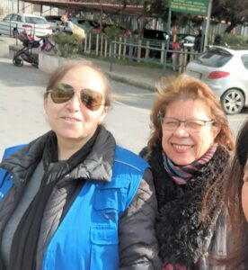
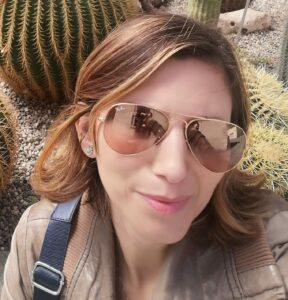
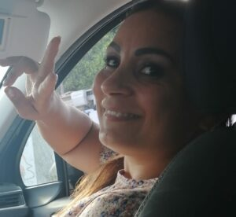
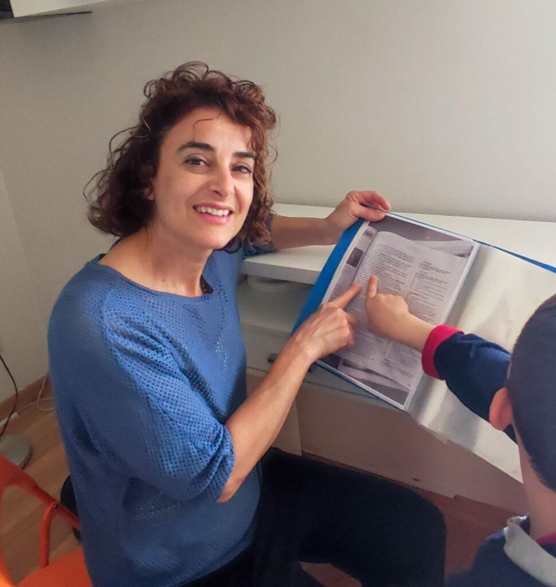
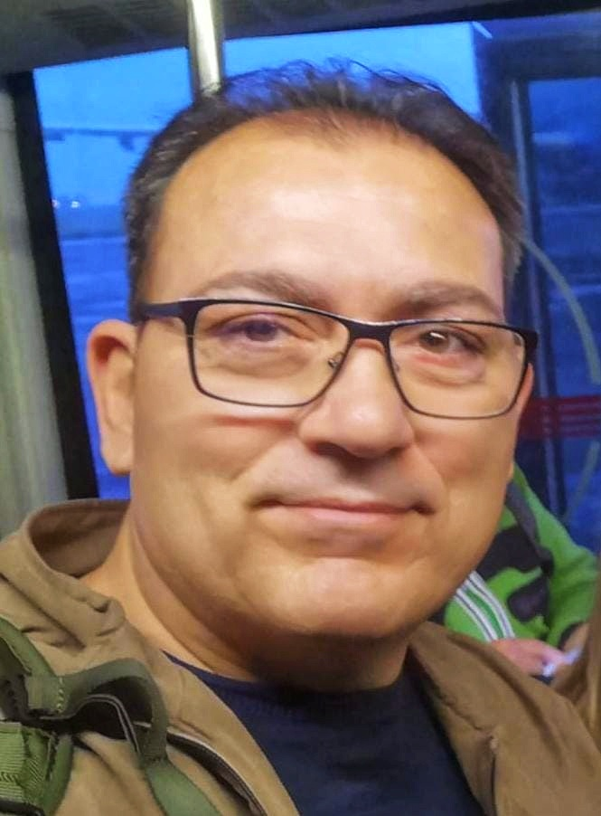
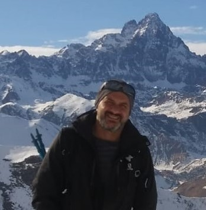

Collabora con noi
Diventa parte del cambiamento. Racconta la tua storia.
La nostra ricchezza sono le persone
“Aiutare gli altri è la vera ricchezza nella vita. Un gesto gentile può fare una grande differenza per qualcuno che ne ha bisogno. Unitevi a noi per diffondere l’amore e la speranza.”

“Mi piace pensare come il detto africano che da soli si va veloci ma insieme si andrà più lontano!”

“L’aiuto che viene dall’alto alle persone bisognose, ha bisogno di canali, uomini e donne disposti a essere usati. La gratificazione è massima.”
“Aiutare gli altri ti gratifica tantissimo, ed è anche un’opportunità per ampliare nuovi orizzonti, fare nuove conoscenze e partecipare ad attività stimolanti.”
“Nel vedere un sorriso o nel ricevere un abbraccio da parte di qualcuno che hai aiutato mi riempie il cuore di gioia e amore!”

“L’amore, la gentilezza, l’aiuto per il prossimo sono l’unico investimento che non fallisce mai!”

“Adoperarsi per il bene degli altri è un gesto di amore.”

“Ama il prossimo tuo come te stesso.. L’amore muove ogni cosa e l’amore è Dio.”
“Il volontariato ti dà l’opportunità di essere usata come strumento da Colui che vuole arrivare ai più deboli.”
“C’è più gioia nel dare amore che nel riceverlo e questo desidero fare, perché questo ho ricevuto quando avevo molto bisogno.”

“La Bibbia afferma che c’è gioia nel dare ed io la voglio sperimentare!”

“Aiutare chi ha necessità fa sentire bene, chi riceve aiuto si sente amato. Mediante l’amore per il prossimo oltre a dare si riceve.”
“Spendere le proprie energie per gli altri e non essere mai stanchi: perché Io, il Signore, fortifico la tua mano destra!”
“Non è tanto quello che diamo, ma quanto amore mettiamo nel dare.”

“Ho conosciuto Aiuto dall’Alto e la coerenza e correttezza di queste persone mi hanno convinto che c’è ancora la possibilità di rialzare l’umanità verso l’alto!”
Vuoi diventare un volontario?
Contatta Lidia la fondatrice per un colloquio e per iniziare il tuo percorso formativo.
Candidati ora